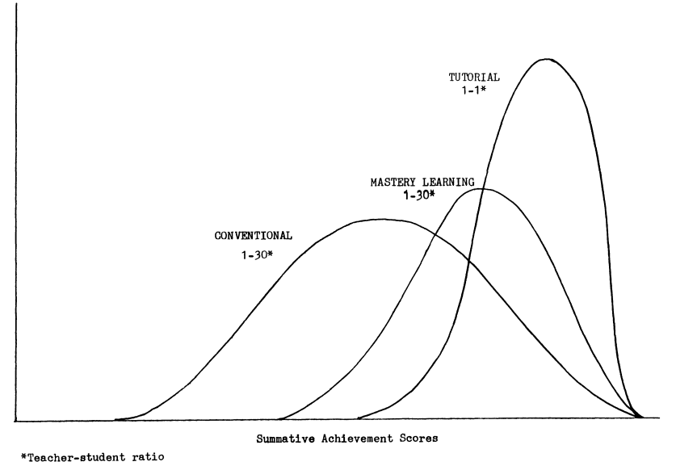
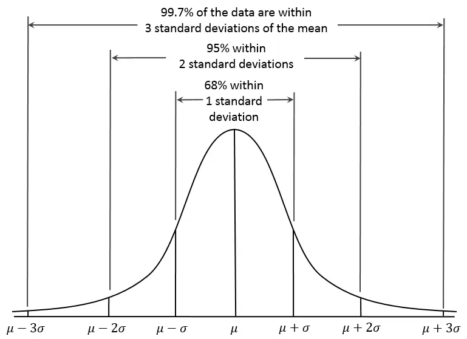

Andrew Nolan's Blog
Andrew's Blog


Andrew Nolan
2023-05-27
Benjamin Bloom strikes again! We talked about Bloom's Taxonomy in a recent blog. Today we are going to take a look at one of his papers that is possibly even more influential, The Two Sigma Problem (1984).
Bloom's The Two Sigma Problem is perhaps one of the most famous open questions in the field of education research. The question he proposed, and researchers have been searching for nearly four decades to solve, is how can we make a classroom setting as effective as 1-on-1 tutoring.
Interestingly, this research actually starts with two graduate students Joanne Anania and Arthur Joseph Burke from the University of Chicago. Their PhD dissertations, validated many times over in multiple experiments and other papers, demonstrated that students who received 1-on-1 tutoring performed two standard deviations (2 sigma = 2σ) better than students in traditional classroom settings.
For those unfamiliar with standard deviations, or just need a little refresher, a standard deviation is a measure of variation in a set of data. Essentially standard deviations can be used to measure the differences from an average. See the graph below for an example:
Anania's and Burke's research showing the 2σ improvement in performance by tutored students means that learners in a 1-on-1 setting scored better than 98% of traditional classroom learners. That. Is. huge!
Not only did they show that students achieved higher, but learners also did it faster and were more enthusiastic about learning when in 1-on-1 settings.
So this sounds great. Why don't we just give every student 1-on-1 tutoring? Therein lies the challenge.
Bloom refers to this tutoring improvement as a problem because it demonstrates that the average student is capable of great success if given the right support, but 1-on-1 tutoring for all students is not feasible in society. Sadly, nearly 40 years later this is still as much the case as it was in 1984.
Bloom's original paper focuses on his and his students' search for a classroom setting solution that can parallel the results of tutoring. Even now there are no total solutions, but there are many ideas that do help.
In their search, Bloom and co found many variables that produced sizable improvements in student learning. Individually or combined, none have reached the 2σ effect of tutoring. However there are some strong contenders.
From Bloom's research, all of these areas showed a single standard deviation improvement in learning outcomes. That's still a huge improvement and would allow students to be in the top 84th percentile of an average classroom. But these changes require a lot of work to implement and still only perform half as well as individualized tutoring.
Of these, Bloom's favorite technique is one he developed called "mastery learning." This technique requires students to demonstrate a strong understanding of a topic before moving on to the next subject. This is a very powerful method as it allows students to fully understand and build upon fundamentals.
Another challenge in any group is biases. Even if teachers are unaware or believe they are providing equal access to students there are often hidden biases that make it hard to accommodate all students in a course. Individual tutoring again seems to be a panacea and can help address this challenge.
Why am I writing about this in my tech blog? I do love education topics but I am planning to tie it back to tech somehow...
The Two Sigma Problem as it is stated is to provide a classroom solution that can provide the same learning benefits as 1-on-1 tutoring. For the past 40 years this problem has remained unsolved. However, we can consider it from a different angle. Instead of making classroom learning as strong as tutoring, what if we made individual tutoring a more accessible option for everyone?
AI and Educational Technology solutions may be able to aid in that goal.
Khan Academy has been pursuing that goal for years. Recently, Sal Khan recently delivered an awesome TED talk on Khan Academy's new AI powered tool Khanmigo. In the talk he discussed how these AI tutors can be trained to help push students in the right direction and encourage learning. As opposed to giving away answers as questioning ChatGPT directly might today. He also discusses how AI can be customized to deliver tutoring to students in ways that resonate best with them.
Khan Academy is not the only online educator integrating with generative AI. Duolingo Max also uses GPT-4 to power their language learning. This includes features like "explain my answer" and "roleplay" that provide additional language learning practice. I particularly like "explain my answer," I think dynamically created feedback will greatly improve online learning. One challenge in developing online content for things like quizzes is to provide a hint or text when a student answers something wrong. Especially in complex questions it is hard to design a hint that captures exactly why every student made a mistake. Having an AI that can respond based on your specific incorrect answer may be very helpful in improving the feedback process in online learning platforms.
In his paper, Bloom highlights how the constant back and forth nature of 1-on-1 instruction can make it more effective than classroom learning because it allows for correction and reinforcement constantly. This is difficult to do in a classroom since the pace may be different for different students. I am not advocating for AI to replace traditional classrooms, I think that may be a bad idea. However, I do think it may be a good supplemental activity. Having a personalized AI assistant may be a great facsimile for tutoring that is much more accessible to people of all backgrounds.
I think there is a lot of potential in AI tutors and Online Learning. However, I think it should be studied and designed well before being implemented. I hope the projects being done by Khan Academy and Duolingo will be done well. As learning content distributors I trust them. But we are seeing across all industries a rapid adoption and integration of generative AI technology. Anyone who has worked in software before knows that once something is implemented and used by users it is hard to move away from it, even if better solutions come later. I worry we may be rushing into AI integrations without fully considering it and it will leave us with tech debt down the road. That said, I am optimistic about the promise of AI for learning and I am interested to see where it goes.
Will AI solve the two-sigma problem? Maybe so, maybe no. But from what we've seen so far it seems like it may be a promising way to make 1-on-1 learning more accessible to everyone.
Enjoyed this article? Subscribe to the RSS Feed!